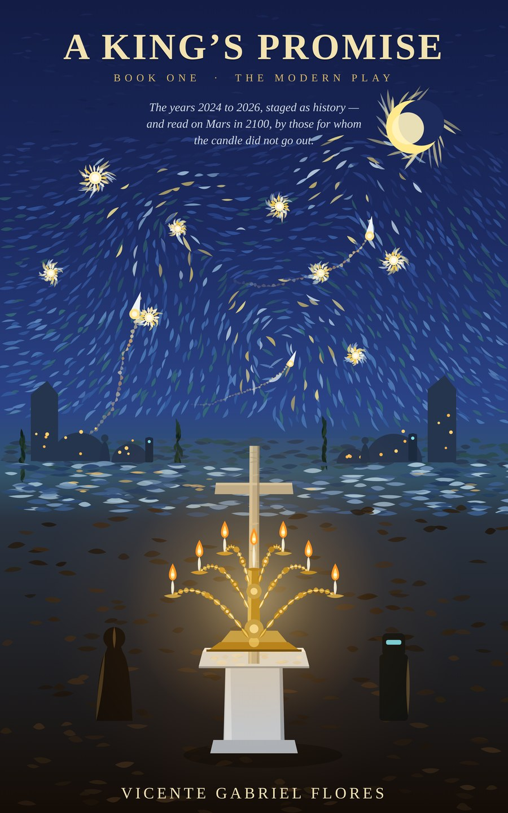

Book One1706–1731 The Harness-Maker’s Son
The book underneath the others.
A King’s Promise — one family, 296 years, two oceans, five flags.
The book underneath the others.
A Tejano family saga told as five plays in the bilingual register of the border.
The prose novel of Juana María Ascárate, heir of Concordia.
The night Pancho Villa took Ciudad Juárez and the alcalde walked his ten-year-old son across the International Bridge into El Paso.

The American present, staged as history and read on Mars — and, beneath that public record, a Tejano family carrying a promise forward.
A monthly play following the Canary Islander families from Tenerife to San Antonio, ship to ship.
An eighteen-year-old walks home from a football social and does not arrive.
The Canary (1730–1803), The Revolution (1821–1836), The River (1800–1856), The Mine (1858–1870), and The Mayor (1862–1913).
The same Tejano family aboard a generation ship, braking toward the first living world.
His bilingual poem “What Was in the Air” is forthcoming in Password, the journal of the El Paso County Historical Society.
Su poema bilingüe “What Was in the Air” próximamente en Password, la revista de la Sociedad Histórica del Condado de El Paso.